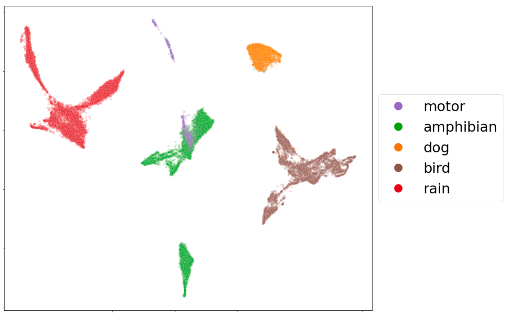

Instituto de Acústica: ACUS 099#
Jupyter Book: Procesamiento Digital de Señales#

El presente Jupyter Book corresponde a la asignatura de Procesamiento Digital de Señales. Esta tiene como principal propósito que los estudiantes apliquen conocimientos en el área de procesamiento y análisis de señales, y fundamenten conceptualmente este procesamiento en el dominio digital en contextos de trabajo multidisciplinario.
Semestre:
Otoño 2023.
Requisitos:
Física: ondas y electromagnetismo (BAIN085-14).
Docente responsable:
Dr. Víctor Poblete Ramírez, vpoblete@uach.cl
Ayudantes:
Diego Espejo Alquinta, diego.espejo@alumnos.uach.cl
Esteban Vargas Carrera, esteban.vargas01@alumnos.uach.cl
Unidad 1: Secuencias y sistemas en el dominio del tiempo discreto.
1.1 Secuencias (señales) básicas en tiempo discreto: Impulso unitario, escalón unitario, exponencial real, exponencial compleja, senoidal, cosenoial, periódicas y aperiódicas, combinación de secuencias.
1.2 Sistemas discretos en el tiempo. Sistemas lineales y no lineales. Sistemas invariantes en el tiempo. Sistemas lineales e invariantes en el tiempo.
1.3 Respuesta al impulso. Suma de convolución.
1.4 Respuesta en frecuencia de sistemas lineales e invariantes en el tiempo.
Unidad 2: Secuencias y sistemas en dominio de la frecuencia.
2.1 Transformada de Fourier aplicada a secuencias. Respuesta impulso expresada como la transformada inversa de Fourier de la función de respuesta en frecuencia. Uso de ventanas.
2.2 Propiedades, teoremas, y parejas de transformadas de Fourier.
2.3 Teorema de modulación y teorema del muestreo (Nyquist).
2.4 Transformada discreta de Fourier (DFT). Transformada inversa discreta de Fourier (IDFT). Transformada rápida de Fourier (FFT).
Unidad 3: Transormada z. Transformada z inversa. Filtros en tiempo discreto.
3.1 Ecuaciones en diferencias lineales con coeficientes constantes.
3.2 Plano complejo z, región de convergencia.
3.3 Función del sistema o función de transferencia. Análisis de polos y ceros de la función de transferencia.
3.4 Diseño de filtros en tiempo discreto: pasa bajo, pasa banda, pasa altos.
Unidad 4: Nociones básicas de procesamiento de señales aleatorias.
4.1 Señales discretas randómicas en el tiempo.
4.2 Señales degradas con ruido aleatorio por procesos de ruido o vibraciones.
4.3 Densidad espectral de potencia usando FFT.
4.4 Función de autocorrelación. Transformada de Fourier de la autocorrelación y espectro de potencia.
Ambiente de desarrollo y manejo de señales:#
Basado en IPython y Jupyter. Se desarrollarán las clases y las actividades prácticas en formato Jupyter notebook. Los trabajos para evaluación se entregarán en el mismo formato. Se contestarán las preguntas teóricas y se resolverán los problemas prácticos bajo este mismo ambiente. Se manipularán datos de señales y se visualizarán las representaciones de señales usando Jupyter widgets y librerías de Python tales como matplotlib, numpy, pandas y scipy.
Proyectos:#
Pueden ser resueltos en grupos de máximo dos estudiantes.
(P1) Suma de Convolución (20%). martes XX de Mayo 2023. Construir un código en Python que muestre una animación, paso paso, del proceso de suma de convolución entre dos secuencias. Debe mostrar gráficamente tres secuencias: las dos secuencias a convolucionar y la tercera es la secuencia resultante convolucionada. Se aplica lenguaje matemático y lenguaje de programación. El código tiene que estar bien organizado y con comentarios. Debe funcionar para cualquier señal acústica que se ingrese.
Entrega: A más tardar, el martes XX de Mayo, 16 horas. Cumplida la fecha de entreha, se descontará un punto por día de atraso.
(P2) Segmentar una señal acústica en tiempos cortos y construir espectrograma (20%). martes XX de Junio 2023. Construir un código en Python que genere una matriz la cual contenga una señal segmentada en tiempo corto. A cada segmento, aplicar una ventana, por ejemplo, Hamming, y calcular la Transformada de Fourier. Debe representar además, la magnitud cuadrática de cada segmento a lo largo del tiempo (espectrograma). Se aplica lenguaje matemático y lenguaje de programación.
Entrega: A más tardar, el martes 8 de Junio, 16 horas. Cumplida la fecha de entreha, se descontará un punto por día de atraso.
(P3) Representaciones de señales acústica (20%). martes XX de Julio 2023. Construir un código en Python que permita hacer representaciones de una señal acústica sin distorsión y degradada por ruido o vibración. Analizar las representaciones en tiempo y frecuencia, y usar Transformada de Fourier, filtros, espectrogramas, e histogramas. Se aplica lenguaje matemático y lenguaje de programación.
Entrega: A más tardar, el martes 06 de Julio, 16 horas. Cumplida la fecha de entreha, se descontará un punto por día de atraso.
Evaluaciones:#
Pimera evaluación (EV1) de procedimiento teórico-práctico (10%): Lunes XX de Mayo de 2023. Se resuelve autónomamente un problema práctico en clases. El procedimiento incluye uso ejercicios de teoría y prácticos de programación Python. El trabajo considera guía de ejercicios y pauta de evaluación.
Segunda evaluación (EV2) de procedimiento teórico-práctico (10%): Lunes XX de Mayo de 2023. Se resuelve autónomamente un problema práctico en clases. El procedimiento incluye uso ejercicios de teoría y prácticos de programación Python. El trabajo considera guía de ejercicios y pauta de evaluación.
Tercera evaluación (EV3) de procedimiento teórico-práctico (10%): Lunes XX de Junio de 2023. Se resuelve autónomamente un problema práctico en clases. El procedimiento incluye uso ejercicios de teoría y prácticos de programación Python. El trabajo considera guía de ejercicios y pauta de evaluación.
Cuarta evaluación (EV4) de procedimiento teórico-práctico (10%): Lunes XX de Julio de 2023. Se resuelve autónomamente un problema práctico en clases. El procedimiento incluye uso ejercicios de teoría y prácticos de programación Python. El trabajo considera guía de ejercicios y pauta de evaluación.
Evaluaciones y nota final:#
El promedio de las evaluaciones se calculará como:
NotaFinal = (EV1)*0.1 + (EV2)*0.1 + (EV3)*0.1 + (EV4)*0.1 + (P1)*0.2 + (P2)*0.2 + (P3)*0.2
Se aprueba con NotaFinal >= 4.0.
Bibliografía:#
Charbit, M. (2017). Digital Signal Processing with Python Programming. John Wiley & Son, Inc. USA.
Unpingco, J. (2014). Python for Signal Processing. Featuring IPython Notebook. Springer International Publishing Switzerland.
Oppenheim, A. V., Schafer, R., W. (1989). Discrete-Time Signal Processing. Prentice Hall, Inc. New Jersey.
Oppenheim, A. V., Schafer, R., W. (2000). Tratamiento de Señales en Tiempo Discreto. Segunda Edición, Prentice Hall, Madrid.
Software, Librerías y Tutoriales#
Lenguaje:
<a href="https://docs.python.org/3/" title="Python 3.9.4 documentation">Python 3.9.4 documentation</a>Ambiente:
<a href="https://ipython.org/" title=" IPython">IPython</a><a href="https://jupyter.org/" title=" Jupyter">Jupyter</a>Librerías para computación científica:
<a href="https://numpy.org/" title=" Numpy">Numpy</a>,<a href="https://pandas.pydata.org/" title=" Pandas">Pandas</a>,<a href="https://www.scipy.org/" title=" Scipy">Scipy</a>Librerías para visualización:
<a href="https://matplotlib.org/" title=" Matplotlib">Matplotlib</a>Librerías para análisis de audio y música:
<a href="https://librosa.github.io/librosa/" title=" LibROSA">LibROSA</a>Tutorial introducción para Markdown y GitHub Markdown Help, LaTeX